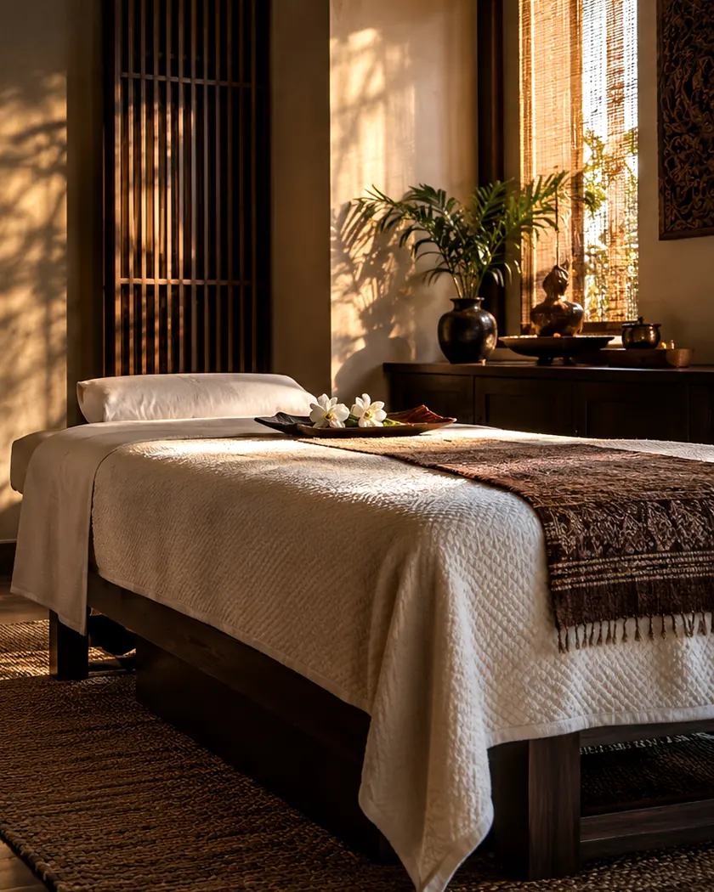
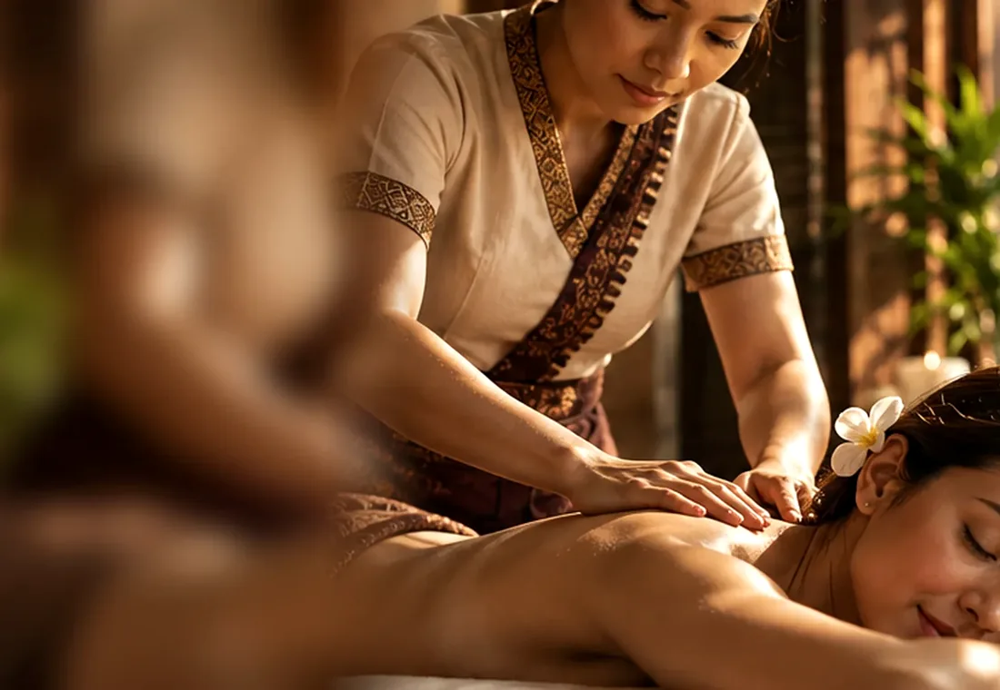
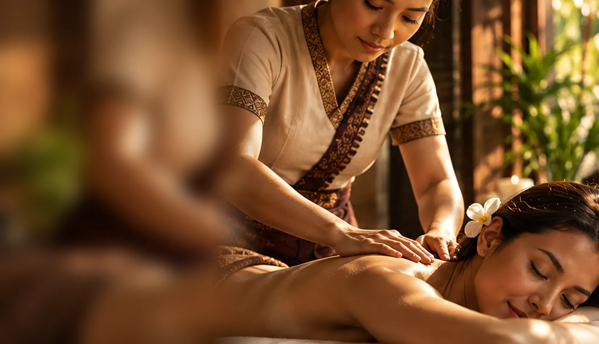

A MORE PERSONAL PATH
Specialty Massage & More Ways to Unwind.
Not every visit calls for the same approach. In addition to its main massage styles, Thaissage Center lists a variety of specialty experiences and focused treatment categories. Browse the possibilities, then check what's offered at your preferred location.
YOUR TIME TO RESET
Make Time for Yourself.
Not every visit calls for the same approach. In addition to its main massage styles, Thaissage Center lists a variety of specialty experiences and focused treatment categories. Browse the possibilities, then check what's offered at your preferred location.

THAISSAGE / 01A MORE PERSONAL PATH / 01
Hands, Heat & Aromatics
Four Hands Massage
Four Hands Massage involves two therapists working with one guest. It is distinct from Couples Massage, which is an appointment for two guests.
Aromatherapy Massage
An oil- or lotion-based massage incorporating essential oils. If you have scent or product sensitivities, ask the location what is used before booking.
Hot Stone Massage
Warmed stones become part of the massage experience. Thaissage Center describes this treatment in connection with Swedish-style massage and warming massage oils.
Thai Herbal Ball Compress
A Thai-inspired treatment using a warm herbal compress. The original Chiang Mai package describes a combination of Thai massage and herbal compress work; separate herbal compress categories also appear on the three Fresha menus.

THAISSAGE / 02A MORE PERSONAL PATH / 02
Focused & Complementary Styles
Reflexology
Reflexology appears on the published treatment menus for all three locations. Use Fresha to check the current format and duration.
Reflexology & Stretching
A separate combination of reflexology and stretching is listed in the Fresha menus. Available session lengths differ, so confirm the treatment through your selected location.
Therapeutic Massage
«Therapeutic Massage» is a service category on Fresha. Specific techniques or outcomes are not defined consistently in the reviewed sources; consult the location menu for its current description.
Massage & Cupping
Massage and Cupping is listed by Fresha at Frisco, Flower Mound, and Southlake. Ask the location about the procedure and whether it is suitable for your preferences before making an appointment.
Prenatal Massage
Prenatal Massage appears in the Frisco and Flower Mound Fresha categories reviewed. It is not listed in the inspected Southlake category inventory. Contact the selected location before booking for pregnancy-related requirements.
Office Syndrome Massage
Office Syndrome Massage brings together pressure work, stretching, and Thai-inspired techniques with attention to the neck, shoulders, back, arms, wrists, and head. This treatment name does not currently appear in the location categories reviewed, so please call your preferred location to check availability.
CBD Oil Massage
CBD Oil Massage is a published service category in the Flower Mound Fresha menu. Its ingredients, regulatory considerations, session details, and current availability must be checked with that location; this page makes no claims about health effects.
A MORE PERSONAL PATH / 03
Add-Ons & Location-Specific Choices
The Fresha menus also include add-on categories. Add-ons are not necessarily stand-alone sessions, and their current terms should be reviewed in the relevant booking menu. Cryotherapy is listed as a category at Flower Mound; because its format and clinical claims are not substantiated by the provided Home copy, it is not described or promoted as a medical treatment here.
A MORE PERSONAL PATH / 04
Find the Right Location for Your Specialty Service.
Not every treatment is available at every site. Review the current services on Fresha, or call the location to clarify details before booking.
THAILAND TO TEXAS
A Moment to Slow Down.
Explore the treatments and appointments currently offered at your preferred Thaissage Center location.
Choose Your Center ↗GOOD TO KNOW
Frequently
asked.
Are specialty treatments offered at every location?
No common availability should be assumed. Compare your preferred location's Fresha menu.
Is Four Hands the same as a Couples Massage?
No. Four Hands refers to two therapists for one guest; Couples refers to two guests.
How do I choose an add-on?
Check the selected location's booking menu to see which add-ons are offered and how they are booked.

YOUR TIME TO RESET
Make Room for Yourself.
Choose a Thaissage Center location to view its current treatments and appointment times. Confirm availability and payment arrangements with your selected center.